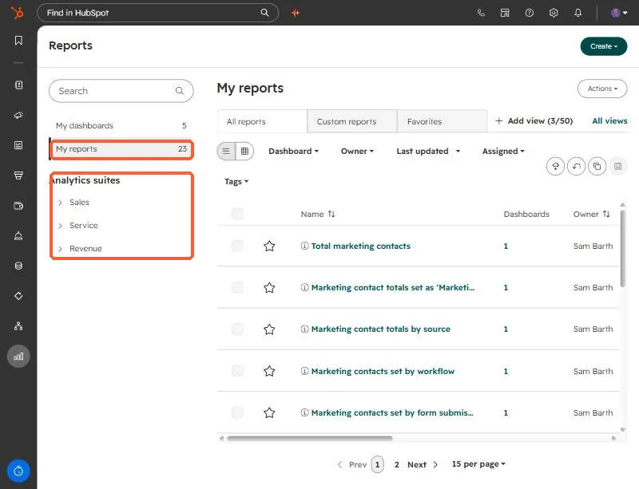
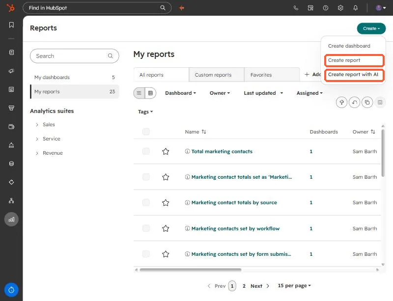
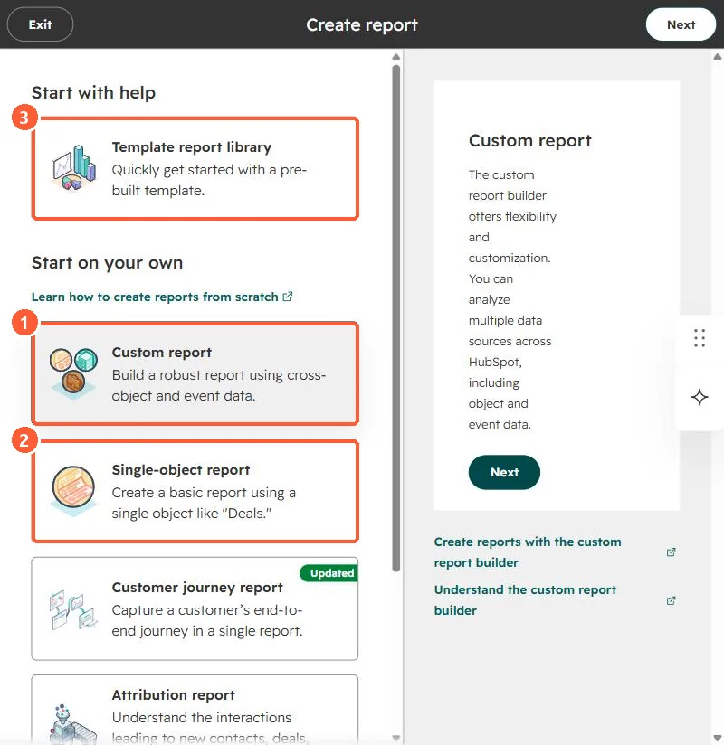
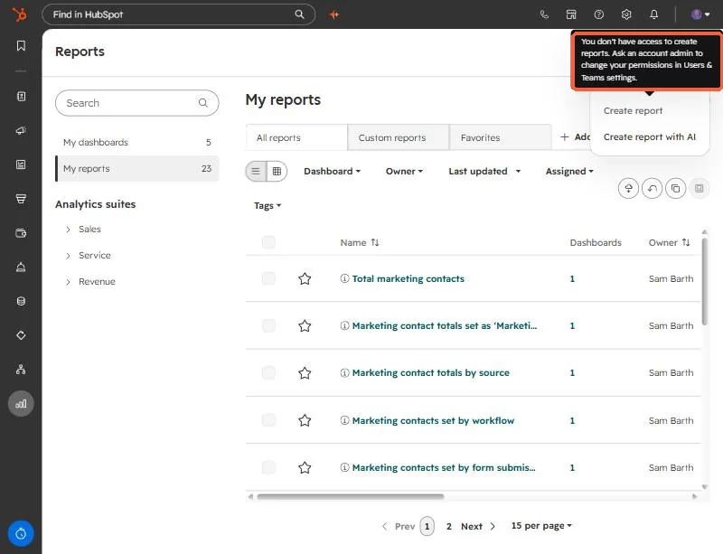
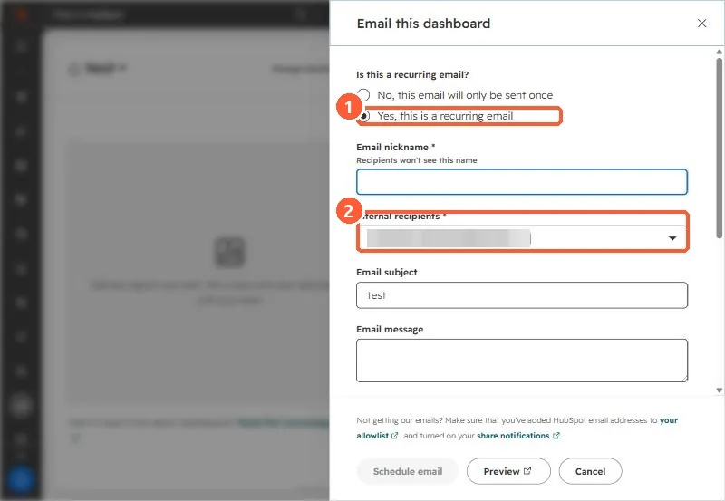
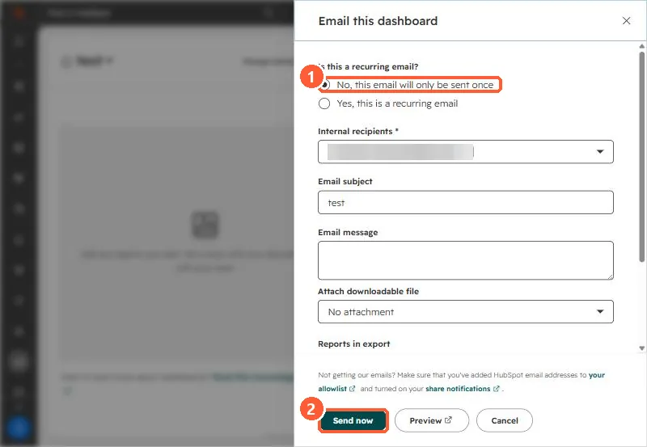

Short answer
Start with a single-object report when one object answers the question: it queries the live CRM and updates fastest. Use the custom report builder (Professional or Enterprise) when you need related objects or activities; those reports refresh about every two hours and non-table charts stop at 1,000 rows. Funnel reports measure conversion between stages, customer journey reports show which touch points convert (Enterprise), and attribution reports need Marketing Hub or Content Hub Enterprise. Recurring report and dashboard emails only go to HubSpot users, and a schedule deleted less than two hours before it is due still sends.
1. Where reports live
Reporting, Reports lists your dashboards and reports, plus HubSpot's prebuilt analytics suites for Marketing, Sales, Service and Revenue:


- Tabs for All, Custom and Favorites, filters for dashboard, owner and tags, list or grid view.
- Hover a report to change its owner, manage access (only for reports not on a dashboard), or add it to a dashboard.
- Star reports you open often, tag them by team, and change the owner when someone leaves. Account Cleanup can delete unused reports.
- Analytics suite reports, such as web traffic analysis, open and export from the suite.
2. Pick the right builder
The Create menu offers Create dashboard, Create report and Create report with AI:


Create report opens the chooser: custom report (1), single-object (2), and the template library (3), plus customer journey and attribution reports.


| Report | Use it for | Needs |
|---|---|---|
| Single-object | One object, such as contacts by lifecycle stage. Fastest to update. | Any plan with reporting |
| Custom report builder | A primary data source plus related objects, activities and events, with calculations | Professional or Enterprise; Create/own and Edit report permissions |
| Funnel | Conversion between lifecycle or pipeline stages, or a custom event funnel (Enterprise) | Custom report limits apply |
| Customer journey | Which touch points attract and convert customers | Enterprise |
| Attribution | Contact attribution; deal create and revenue attribution | Marketing Hub or Content Hub Enterprise; revenue needs Marketing Hub Enterprise |
| One-to-one email | Open, click and reply rates over time | Professional or Enterprise |
A template is often the fastest starting point. The number of custom reports you can have depends on your subscription, and owning several subscriptions of the same tier does not add the limits together.
3. Custom report builder limits
- Non-table charts are limited to 1,000 unique rows. Add filters or use a dimension with fewer values. Table reports paginate past 1,000.
- Custom reports refresh about every two hours, so a change in the CRM may not show yet.
- Existing reports cannot be merged. Build a new report with all the data sources, or keep separate reports on one dashboard.
- Forms: supports HubSpot forms, non-HubSpot forms, blog comment forms and legacy pop-ups, but not lead ads, scheduling pages or surveys. Form submissions and form analytics data sources cannot be in the same report. For quick numbers, the forms list Analyze tab may be enough, see forms.
If Create report shows a tooltip instead of opening, the user lacks report creation permissions. A Super Admin changes this in Users & Teams:


4. Funnels and customer journeys
Funnel reports show conversion between stages as a funnel bar, column or table. Pick stages in order, or the rates do not make sense. In customer journey funnels, contacts must pass required stages in order to count at later ones. With Contacts as the source, Pathfinder can suggest stages. For time in stage on deals, see deal pipelines.
5. Email reports and dashboards
Recurring report and dashboard emails go daily, weekly or monthly, and only to HubSpot users. The dialog labels the field Internal recipients (2):


One-time sends are looser:


- Reports can go once to non-users through Other recipients, on a verified domain.
- Dashboards can go once to non-users whose domain is connected as an email sending domain. That needs Professional or Enterprise and admin-level Reporting permissions.
- HubSpot allows 100 emails a day to non-HubSpot users, and bounced addresses cannot receive report emails.
- Only single object, event-based and customer journey reports can be attached as files, see exports.
To change or stop a schedule: for a report, hover it and choose Actions, Manage recurring shares; for a dashboard, Share, Manage recurring emails. You need Super Admin or ownership. Delete it at least two hours before it is due: HubSpot captures the data two hours ahead, and a schedule deleted inside that window still sends. If someone does not get them, check that they allowlist HubSpot's sending addresses and have share notifications on.
6. What is changing for 2027
- Create report with AI sits next to the builders in the Create menu. Check what it builds against the table above, since the builder it picks decides refresh speed and row limits.
- Revenue suite. The analytics suites now include Revenue beside Marketing, Sales and Service.
- Legacy funnels. HubSpot's KB calls the older custom funnel builder legacy. New funnels belong in the journey and funnel report types.
Common questions
Why does my custom report not show today's changes?
Custom reports refresh about every two hours. Single-object reports query the live CRM and update faster.
Can I send a recurring report to someone outside HubSpot?
No. Recurring emails only go to HubSpot users. One-time sends can reach outside addresses under the conditions above.
Why does my chart stop at 1,000 rows?
Non-table charts in the custom report builder are capped at 1,000 unique rows. Use a table, or filter.
I deleted a recurring email and it still went out.
It was deleted less than two hours before its send time, after HubSpot had already captured the data.
Sources
- HubSpot Knowledge Base: Create reports with the custom report builder
- HubSpot Knowledge Base: Create custom reports
- HubSpot Knowledge Base: Manage reports in your reports list
- HubSpot Knowledge Base: Create a report with journey analytics
- HubSpot Knowledge Base: Create custom (legacy) funnel reports
- HubSpot Knowledge Base: Understand attribution reporting
- HubSpot Knowledge Base: Report on forms using the custom report builder
- HubSpot Knowledge Base: Share or export reports and dashboards